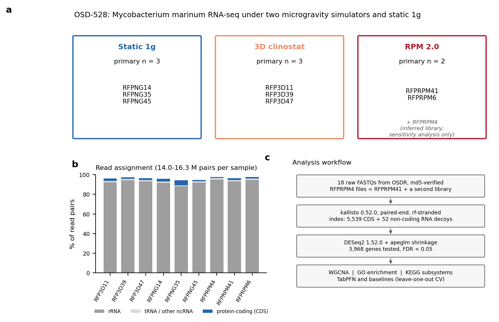
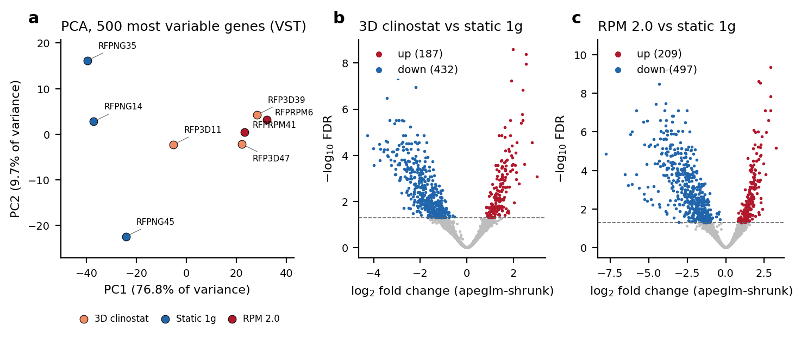
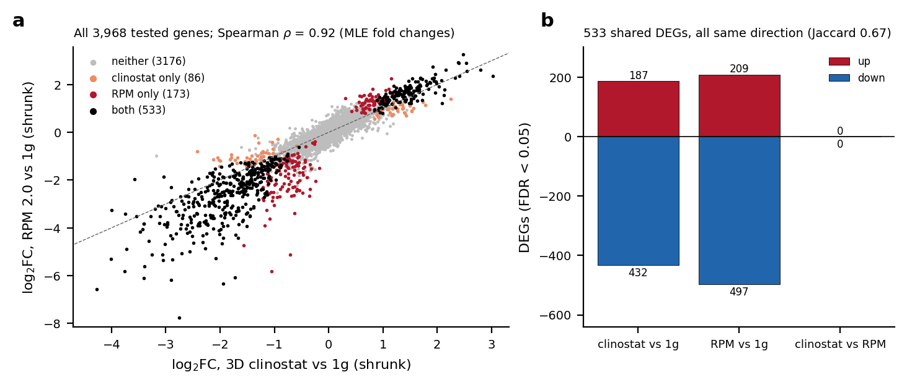
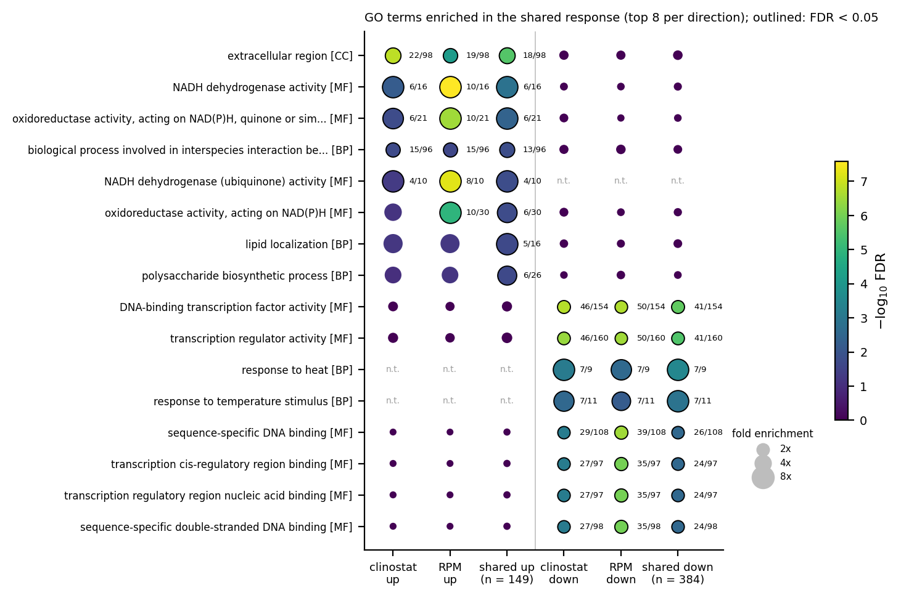
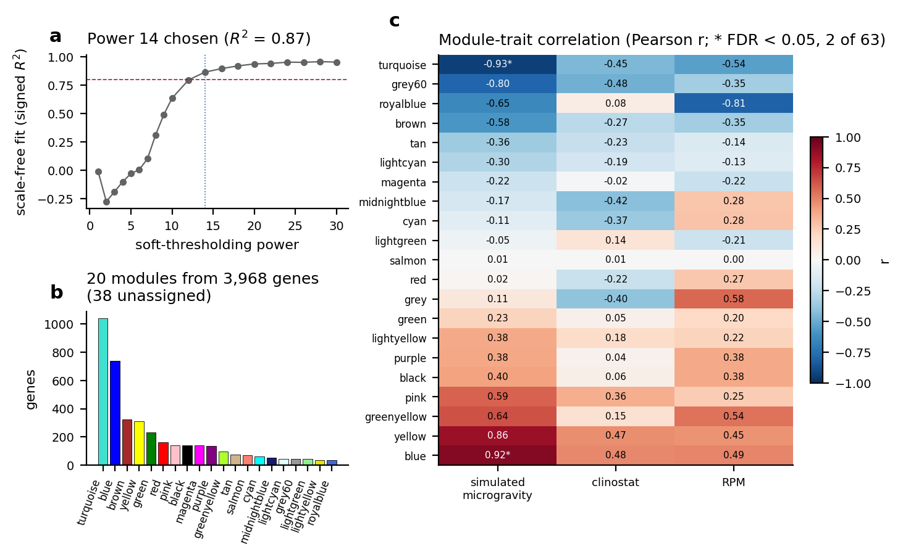
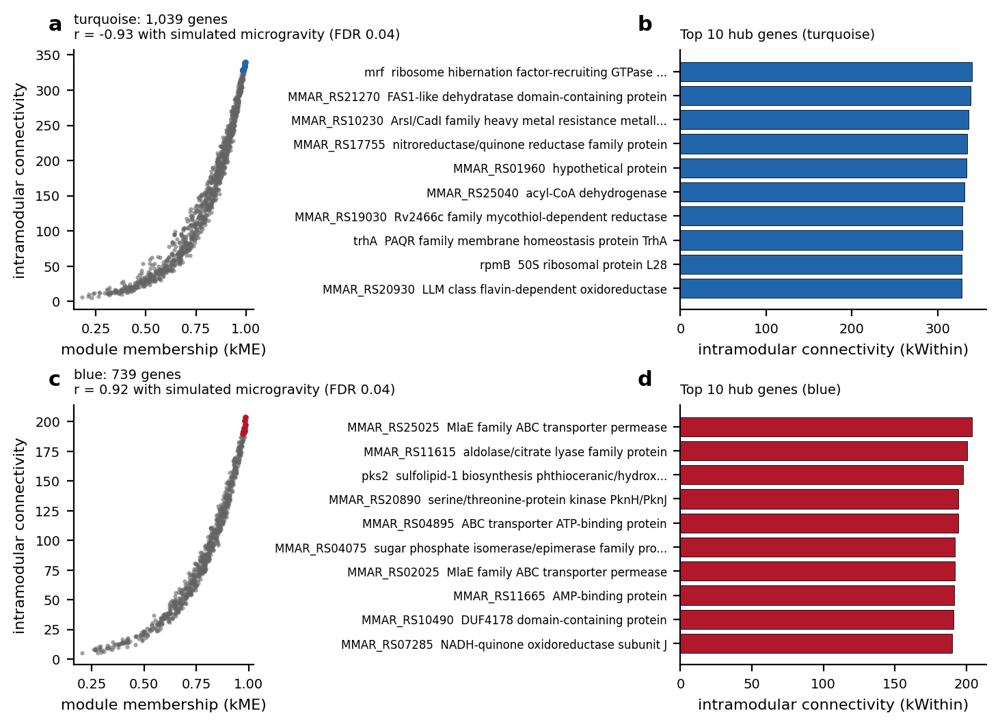
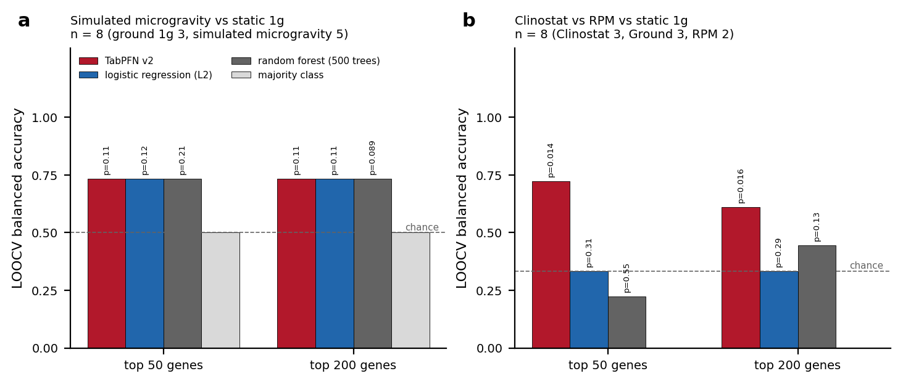
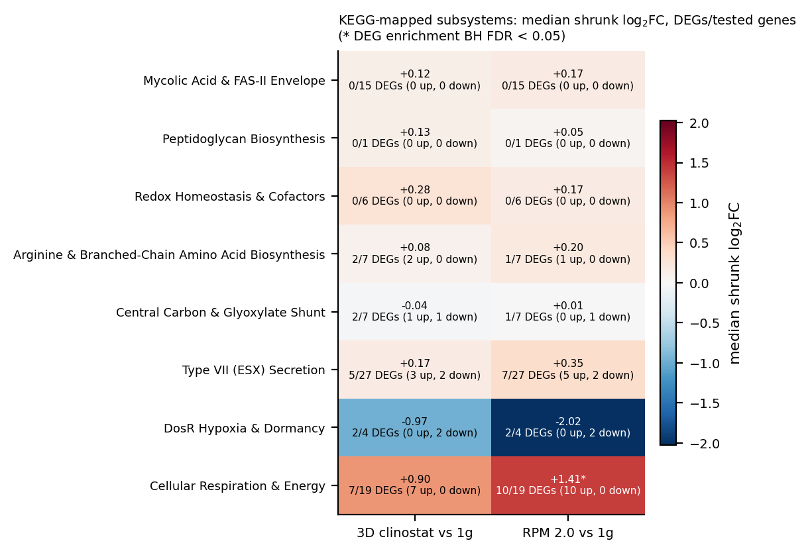
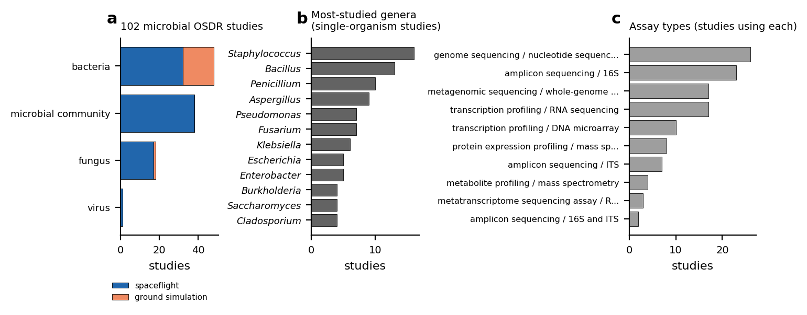

Ground-based microgravity simulators are widely used to study microbial responses to spaceflight, but whether different machines produce the same biological response is rarely tested quantitatively. We re-analysed NASA Open Science Data Repository study OSD-528, in which Mycobacterium marinum was grown for four days on a lab-built 3D clinostat, a commercial RPM 2.0 or static 1g, and the bacteria in suspension were sequenced. The deposited files for one RPM library begin with a byte-identical copy of another library’s files, so the primary analysis used 3 ground, 3 clinostat and 2 RPM samples. Every read was re-quantified with rRNA-aware pseudoalignment. Of 3,968 genes tested, 619 were differentially expressed under the clinostat and 706 under the RPM (FDR ). 533 genes changed under both simulators, all in the same direction; genome-wide fold changes correlated at Spearman , and no gene differed significantly between the simulators. The shared response raised Mce-family lipid-transport genes and complex I (nuo) genes, and lowered transcription factors and heat-shock genes. Mycolic acid synthesis genes did not change. Co-expression analysis found two modules tracking simulated microgravity (2 of 63 module–trait tests at FDR ). Leave-one-out classifiers, including the tabular foundation model TabPFN, classified 6/8 held-out samples correctly as simulated microgravity or 1g, which is not clearly better than chance with eight samples, and could not robustly separate the two simulators. The two simulators drove largely the same transcriptional programme, supporting the inexpensive clinostat as a substitute for the RPM in this system. All code, outputs and generated numbers are openly available.
Bacteria in spacecraft grow in fluids where gravity no longer drives sedimentation or convection, and microgravity can change bacterial gene expression and behaviour(Nickerson et al. 2000). Spaceflight experiments are scarce, so most of this biology is studied on the ground with microgravity simulators, which keep reorienting the sample so that the gravity vector averages towards zero. Simulators differ in design and cost, and whether they produce the same biological response is an open, practical question.
Non-tuberculous mycobacteria are a concern for engineered water systems because they persist in plumbing and form biofilms(Falkinham 2015). Mycobacterium marinum, a fish pathogen closely related to Mycobacterium tuberculosis(Stinear et al. 2008), can be handled at biosafety level 2 and grows either as a biofilm or in suspension, which makes it a convenient model(Clary et al. 2022; Harrison 2023). Clary and colleagues built an inexpensive 3D clinostat and compared it with a commercial RPM 2.0 using M. marinum(Clary et al. 2022). They reported that the two machines produced similar attached biofilms and similar transcriptome changes in the bacteria in suspension, relative to normal gravity. Their RNA-seq data are openly available in NASA’s Open Science Data Repository as study OSD-528(Harrison 2023).
Here we re-analyse that deposit to put numbers on the comparison: how large each simulator’s transcriptional response is, how far the two responses overlap, and what functions they involve. In doing so we found that one RPM library in the deposit duplicates another, and we describe how we handled it. We quantified every read with rRNA-aware pseudoalignment, tested differential expression with DESeq2, built a co-expression network, tested GO enrichment, mapped expression changes onto KEGG-supported metabolic reactions, and asked whether a tabular foundation model, TabPFN(Hollmann et al. 2025), can classify the conditions from eight samples better than simple baselines. All code and outputs are open, and every number in the text is generated from them(Wilkinson et al. 2016).
The 9 deposited libraries contained 14.0–16.3 million read pairs each. With the genome’s non-coding RNA genes included as decoys, 94.2–97.6% of pairs pseudoaligned, but most of them to rRNA (88.2–95.0%; Fig. 1b). Only 1.0–5.0% fell on protein-coding genes. The analysis therefore rests on 216,000–790,000 coding read pairs per primary sample: enough to quantify most genes, but thinner than the raw totals suggest.
The two FASTQ files of sample RFPRPM4 each start with a byte-identical copy of the corresponding RFPRPM41 file, followed by a second library with its own index (15,304,202 read pairs; Methods). Earlier analyses of this deposit that read RFPRPM4 from the start would have counted RFPRPM41 twice. We excluded the inferred RFPRPM4 library from the primary analysis, leaving 3 ground, 3 clinostat and 2 RPM samples (Fig. 1a), and tested its effect separately.

Simulated microgravity dominated the variation between samples: PC1 explained 76.8% of the variance and separated the ground controls (PC1 to ) from all but one simulator sample ( to ; Fig. 2a). The exception was clinostat sample RFP3D11, which lay between the two groups (PC1 ). PC2 explained 9.7% and did not separate the two simulators.
Of 3,968 genes tested, 619 were differentially expressed under the clinostat (187 up, 432 down) and 706 under the RPM (209 up, 497 down; FDR ; Fig. 2b,c). Down-regulation outnumbered up-regulation under both simulators. Almost all of these DEGs also changed at least two-fold after apeglm shrinkage (574 and 680).

The two responses largely coincide (Fig. 3). 533 genes were DEGs under both simulators, all in the same direction (149 up, 384 down), out of 792 DEGs under either (Jaccard index 0.67). Across all tested genes the two sets of fold changes correlated with Spearman . Comparing the simulators directly found 0 DEGs. With only 2 RPM samples this comparison has little power, so it shows no detectable difference rather than proving the two responses identical.

Adding the inferred RFPRPM4 library (RPM ) increased the RPM DEG count to 859 and the clinostat count to 683. It recovered 669 of the 706 primary RPM DEGs, with fold changes that correlated with the primary ones at Pearson . The clinostat-vs-RPM comparison again found 0 DEGs (Supplementary Fig. S1). The conclusions do not depend on how the defective deposit is handled.
The GO analysis rests on electronic annotations (99.7% IEA) covering 71% of tested genes, so it describes predicted function. The shared up-regulated genes were enriched for the cellular component “extracellular region” (18/98 genes, FDR ; Fig. 4); 15 of these genes encode Mce-family proteins. They were also enriched for NADH dehydrogenase activity (6/16, FDR ). This signal was strongest under the RPM, where 10/16 annotated NADH dehydrogenase genes were up (FDR ); all of them are subunits of NADH:quinone oxidoreductase (complex I). The shared down-regulated genes were enriched for DNA-binding transcription factor activity (41/154, FDR ) and for the response to heat (7/9, FDR ): dnaJ, clpB, groL (2 copies), lon, sigE and 1 unnamed gene. The leading terms (extracellular region, NADH dehydrogenase activity, transcription factor activity and response to heat) were each significant under both simulators separately; some weaker terms reached significance only in the larger shared sets (Fig. 4).

WGCNA grouped 3,968 genes into 20 modules (38 unassigned; power 14, scale-free ; Fig. 5). Of 63 module–trait correlations, 2 passed FDR , both with simulated microgravity: the turquoise module (1,039 genes, , FDR ) and the blue module (739 genes, , FDR ). No module correlated significantly with either simulator on its own. The turquoise module is enriched for transcription factor activity and lipid metabolic process, and the blue module for NADH dehydrogenase activity and the respiratory chain (Supplementary Fig. S2). They mirror the down- and up-regulated arms of the DEG analysis. Figure 6 lists their most connected genes. With eight samples these hub rankings are fragile and are given as leads, not findings.


In leave-one-out cross-validation, TabPFN, logistic regression and the random forest each classified 6/8 held-out samples correctly as simulated microgravity or static 1g, with either feature count (balanced accuracy 0.73; Fig. 7a). Every model misclassified the same two samples: RFP3D11 and RFPNG45. These are the clinostat sample that lay between the groups in the PCA and the ground sample furthest from the others on PC2. Exact permutation tests show that this accuracy is not clearly better than chance with eight samples (balanced-accuracy –). However, the held-out probabilities ranked the samples well (AUROC 0.87–0.93; , the smallest attainable), which points to a real but modest separation. On the three-class task, TabPFN classified 6/8 samples correctly (balanced accuracy 0.72, ), where logistic regression (3/8) and the random forest (2/8) were no better than chance (Fig. 7b). The advantage did not survive adding the inferred RFPRPM4 library (TabPFN 4/9, ). Given that, and the many comparisons made, we do not take it as evidence that the two simulators can be told apart.

Re-mapping the earlier reaction set to KEGG-supported genes changed it substantially: 24 of its 32 reactions had been placed on the wrong gene (Methods). Of the 8 subsystems, 1 was enriched for DEGs in either contrast: cellular respiration under the RPM. There, 10/19 tested genes were DEGs, 10 of them up, with a median shrunk fold change of +1.41 (FDR ; Fig. 8). Under the clinostat the same subsystem moved in the same direction without reaching significance (7/19 DEGs, median +0.90, FDR ). The signal comes from the complex I (nuo) genes already seen in the GO analysis. Mycolic acid and FAS-II genes (0/15 DEGs under the clinostat, 0/15 under the RPM) and redox and cofactor genes (0/6 and 0/6) did not change.

OSDR holds 102 microbial spaceflight or simulated-microgravity studies: 85 spaceflight studies and 17 ground simulations (Fig. 9). They cover bacteria (48 studies), microbial communities (38) and fungi (18). Judged by their recorded factors, OSD-528 is the only one that pairs an RPM with a 3D clinostat, which makes it the only direct test of these two simulator types in a microbe in the repository.

The lab-built 3D clinostat and the commercial RPM 2.0 produced largely the same transcriptional response in planktonic M. marinum. 533 genes changed under both, all in the same direction, and fold changes across the whole transcriptome correlated at . A direct comparison found no gene that differed between the machines. This puts numbers on the qualitative conclusion of Clary and colleagues, who reported similar transcriptome changes under the two simulators(Clary et al. 2022), and supports the use of the inexpensive clinostat as a substitute for the RPM under these conditions. The direct comparison is weak, however: with 2 RPM samples, a modest simulator-specific effect would go undetected. The RPM gave somewhat more DEGs and a stronger respiration signal than the clinostat, which may be a real difference in degree or may simply reflect sampling.
The shared response points to a few functional themes, which rest on mostly electronic annotations and should be read as hypotheses. Among up-regulated genes, Mce-family proteins dominated the extracellular-region signal; in mycobacteria, Mce systems import lipids such as cholesterol(Pandey and Sassetti 2008). Complex I (nuo) genes were also up, most clearly under the RPM, and respiration was the only KEGG-mapped subsystem enriched for DEGs. Among down-regulated genes, transcription factors and heat-shock functions stood out: dnaJ, clpB, groL (2 copies), lon, sigE and 1 unnamed gene. One reading is a shift towards respiratory metabolism and lipid uptake together with relaxed protein-quality-control stress in the low-shear, mixed environment of the simulators. These data cannot distinguish an effect of mechanical unloading from indirect effects such as changes in mass transport, oxygen supply or growth rate. Clary and colleagues reported reduced planktonic growth under other clinostat settings(Clary et al. 2022), so differences in growth between conditions cannot be ruled out.
Several functions emphasised in earlier, uncorrected versions of this analysis were not supported by the re-analysis. Mycolic acid and FAS-II genes did not change (0/15 and 0/15 DEGs), and neither oxidative-stress nor ESX secretion terms were enriched among the DEGs.
TabPFN, a foundation model built for small tabular data(Hollmann et al. 2025), did no better than logistic regression or a random forest at telling microgravity from 1g samples. Its apparent advantage on the three-class task did not hold up in the sensitivity analysis. With eight samples, classification adds little to the differential-expression analysis: the two samples every model misclassified are the same two that sit apart in the PCA.
The data have real limits. The libraries are dominated by rRNA, leaving roughly 216,000–790,000 coding read pairs per sample. The primary analysis has only 8 samples, so the co-expression network and its hub genes in particular are exploratory. The RFPRPM4 defect also shows how easily a deposit error propagates. The duplicated file passes every checksum, because the deposited checksum describes the defective file itself, and an analysis that reads it naively silently doubles one sample. Detecting it took comparing files byte by byte. We have prepared a report for the OSDR curators, and we keep the inferred library out of the primary analysis until the depositors confirm it; including it does not change the conclusions (Supplementary Fig. S1).
In summary, two different microgravity simulators drove the same large transcriptional programme in M. marinum, involving lipid-uptake and respiratory genes up and stress and regulatory genes down. Every number, table and figure here can be regenerated from the raw OSDR reads with the accompanying code.
All data come from NASA Open Science Data Repository study OSD-528 (GLDS-528)(Harrison 2023), deposited by Clary and colleagues(Clary et al. 2022). According to the OSDR study description, M. marinum expressing red fluorescent protein was grown in biofilm-promoting medium in flaskettes holding a piece of polydimethylsiloxane (PDMS) membrane. Flaskettes were attached to an RPM 2.0 or to a lab-designed 3D clinostat in the same incubator, or placed on the shelf beside them as the static 1g control, for 4 days at 31 C. RNA was prepared from the bacteria in suspension. The transcriptomes therefore describe planktonic cells grown alongside the membrane, not the membrane biofilm. Three libraries per condition were deposited as paired-end FASTQ files (9 samples, 18 files). We downloaded every file through the OSDR file API and checked it against the deposited md5 list before use.
The deposited R1 and R2 files of sample RFPRPM4 each begin with the complete corresponding file of sample RFPRPM41: the md5 of the first 748,733,492 bytes of RFPRPM4 R1 equals the deposited md5 of RFPRPM41 R1, and likewise for R2. A second gzip stream follows in each file, holding 15,304,202 read pairs. These reads come from the same sequencing run but carry a library index used by no other sample. Read from the start, RFPRPM4 therefore duplicates RFPRPM41. We split off the second library and treat it as an inferred RFPRPM4: it is excluded from the primary analysis, which uses 3 ground, 3 clinostat and 2 RPM samples, and included only in a sensitivity analysis. The OSDR curators have not yet been asked to confirm this assignment.
Reads were quantified with kallisto 0.52.0(Bray et al. 2016) in paired-end mode against the M. marinum strain M RefSeq assembly GCF_000018345.1(Stinear et al. 2008), whose md5 was checked against NCBI. The index contained all 5,539 annotated coding sequences (CDS) plus the genome’s 52 rRNA, tRNA and other non-coding RNA genes as decoys. Library strandedness was inferred by pseudoaligning 200,000 read pairs in each orientation; the libraries are reverse-stranded and were quantified as such. Between 88.2% and 95.0% of read pairs were assigned to rRNA, which suggests little or no rRNA depletion. CDS received 1.0–5.0%, about 216,000–790,000 read pairs per primary sample. Only CDS rows enter the count matrix (Supplementary Table S1).
Estimated counts were rounded and analysed with DESeq2 1.52.0(Love et al. 2014) using the design condition (ground, clinostat, RPM). Genes with at least 10 counts in at least 2 samples were kept (3,968 of 5,413 non-pseudogene CDS). We tested clinostat vs ground, RPM vs ground and clinostat vs RPM with Wald tests and Benjamini–Hochberg (BH) correction, calling a gene differentially expressed (DEG) at FDR . Fold changes are reported both as maximum-likelihood estimates and shrunk with apeglm 1.34.0(Zhu et al. 2019). The shared simulated-microgravity response is the set of genes that are DEGs under both simulators with the same sign. For the principal component analysis (PCA), we used the variance-stabilised transform (blind to design) and the 500 most variable genes. The whole analysis was repeated with the inferred RFPRPM4 library included (sensitivity analysis).
We built a signed weighted gene co-expression network with WGCNA 1.74(Langfelder and Horvath 2008) from the variance-stabilised expression of the 8 primary samples. The soft-thresholding power was the smallest that gave a signed scale-free fit (power 14, ). Modules were detected with a minimum size of 30 genes and merged at a cut height of 0.25. Module eigengenes were correlated with three binary traits (simulated microgravity, clinostat, RPM). Student p-values were BH-corrected across all 63 module–trait tests. With eight samples every correlation rests on eight points, so the network results are exploratory.
GO annotations for M. marinum strain M were taken from
UniProtKB (reference proteome UP000001190, release 2026_03) and mapped
to RefSeq locus tags through the GenBank old_locus_tag
qualifiers. They were propagated up the is_a and
part_of relations of go-basic (release 2026-07-26). Of the
3,967 genes tested for differential expression,
2,821 (71%) have at least one annotation, and 99.7% of the
annotations used are electronic (IEA), so the results describe predicted
function. For each DEG set (up and down per contrast, and the shared
response) and each WGCNA module, we ran a one-sided hypergeometric test
for every GO term with 5–500 annotated genes in the universe. The
universe was the annotated tested genes, taken separately for biological
process, molecular function and cellular component. P-values were
BH-corrected within each ontology and gene set. The test treats genes as
independent; operons and nested GO terms make neighbouring results
correlated.
We asked whether the transcriptomes identify the condition of a held-out sample, using two tasks: simulated microgravity vs static 1g (binary) and clinostat vs RPM vs static 1g (three classes). Models were evaluated by leave-one-out cross-validation (LOOCV) over the 8 primary samples. Within each training fold, we selected the genes with the highest variance across the training samples only ( and ; both are reported) and standardised them with training statistics, so nothing from the held-out sample reached the features. We compared TabPFN(Hollmann et al. 2025) (package version 8.0.7, TabPFN v2 classifier weights released under the Prior Labs License 1.1) with L2-regularised logistic regression, a 500-tree random forest and a majority-class baseline, all using the same folds and features. We report LOOCV accuracy, balanced accuracy and, for the binary task, the area under the ROC curve (AUROC) of the held-out probabilities. Because a perfect or near-perfect score is easy to obtain by chance with eight samples, we computed exact permutation p-values: the whole LOOCV pipeline was rerun under every distinct relabelling of the samples that preserves the class sizes. The analysis was repeated with the inferred RFPRPM4 library.
We revisited the curated set of metabolic and cellular reactions from
an earlier version of this analysis. Each reaction was re-mapped to
M. marinum genes using only KEGG links: organism
mmi, enzyme-to-gene and orthology-to-gene links, KEGG GENES
dated 2026-10-16. KEGG’s locus tags were joined to RefSeq locus tags
through the GenBank old_locus_tag qualifiers. Of the 32
original reactions, 7 had been assigned to the gene KEGG supports, 24 to
a different gene and 1 could not be checked. We dropped the 3 reactions
with no KEGG-supported gene, leaving 28 reactions on 100 genes in 8
subsystems (Supplementary Tables S17–S19). For each subsystem and
contrast, we counted DEGs among the tested genes and tested for DEG
enrichment with a one-sided hypergeometric test against all tested genes
(BH correction across subsystems). We also report the median
apeglm-shrunk fold change. The subsystems are small, hand-picked sets
rather than an unbiased pathway screen, and co-transcribed operons make
their genes non-independent, so these p-values are optimistic.
To place OSD-528 in context, we listed every NASA OSDR study whose organism field names a microorganism (classified by NCBI Taxonomy lineage) and that is a spaceflight study or has a spaceflight or simulated-microgravity factor. The list was built from the OSDR API and every accession’s metadata (Supplementary Table S16). DOIs are given only where OSDR provides one and DataCite resolves it to that study. A screening log records the decision for every microbial study.
Every step is a script in the repository
(analysis/00–09), and make all
reruns the pipeline from the raw reads. Every number quoted in this
manuscript is written into manuscript/chapters/numbers.tex
by analysis/09_manuscript_numbers.py from the output files,
and every figure is drawn from those outputs by
analysis/06_generate_figures.py.
Raw reads are available from the NASA Open Science Data Repository as
study OSD-528 (GLDS-528; DOI 10.26030/r3re-fd65). The
RFPRPM4 files in that deposit contain the RFPRPM41 files followed by a
second library (Methods). All processed data (count matrices,
differential expression, network, enrichment, classification and
metabolic-subsystem tables) are in the repository below, under
data/processed/ and results_tables/. The
repository has no archival (Zenodo) DOI yet.
All analysis code is at https://github.com/dr-richard-barker/OSD-528-mycobacterium-microgravity-metaanalysis
under the MIT licence. make all reproduces every result,
table, figure and number in this manuscript from the raw OSDR reads.
The experiment, sequencing and data deposit analysed here are the work of Clary and colleagues(Clary et al. 2022); this re-analysis would not be possible without their open deposit in NASA OSDR.
R.B. designed and performed the re-analysis and wrote the manuscript.
The author declares no competing financial or non-financial interests.